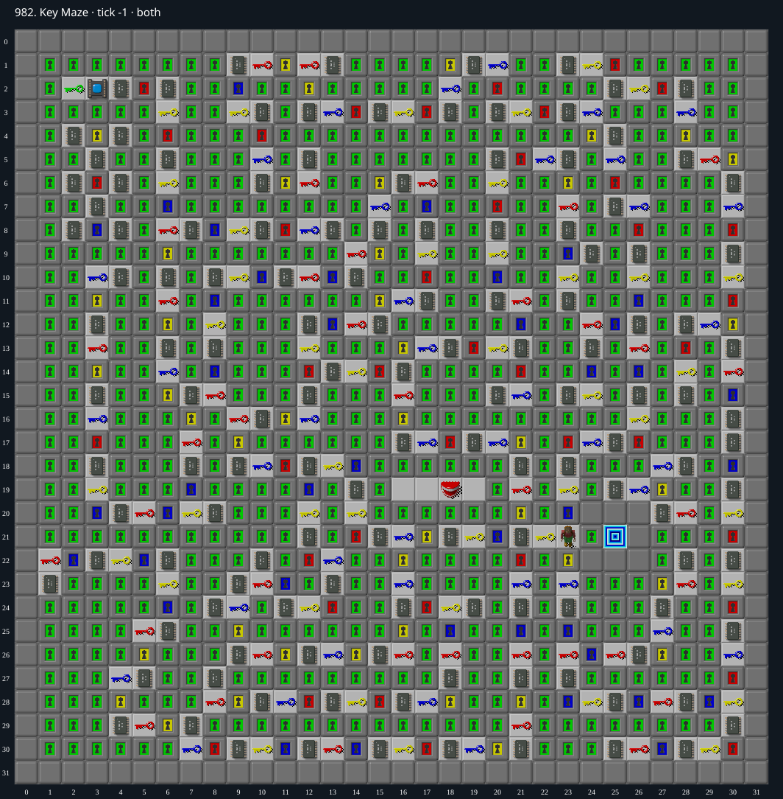

Jacques · Original Tile World MS
982. Key Maze
Impossibility argumentThe only green key is trapped behind green doors or the all-chip socket, while eight mandatory chips themselves require a green key. The exit also requires green.
134 chips required · 1999 second time limit
Why completion is impossible
- The only green key is (2,2). Its north, west and south neighbors are green doors; its east neighbor is socket (3,2), requiring all 134 chips.
- Before the first green key is collected, every green door stays closed: inventory starts empty, no other green key exists, and the map has no blocks/cloners/teleports or mechanisms that bypass/change doors. The only monster is teeth, which cannot open these doors.
- Eight required chips in the small cluster x=2..4,y=4..8 are completely surrounded by green doors. Even granting free passage through all red, blue and yellow doors, this cluster remains separate from the player start (23,21).
- Hence at least these eight chips remain before the first green key; the socket cannot open. The first green key therefore cannot ever be collected (circular dependency).
- The sole Exit (25,21) has ordinary walls north, east and south, and green door (24,21) west. Since no green key can be acquired, the exit remains unreachable even if chips are ignored for exit entry.
Inspect both layers
The main map shows the initial runtime state. Switch to the buried layer to inspect hidden terrain and items. Hover coordinates are also available in the downloadable SVG.


Recorded checks and attempts
- data audit: Decoded both 1024-cell DAT planes and exact level metadata; initialized production MS runtime and rendered actual game sprites.